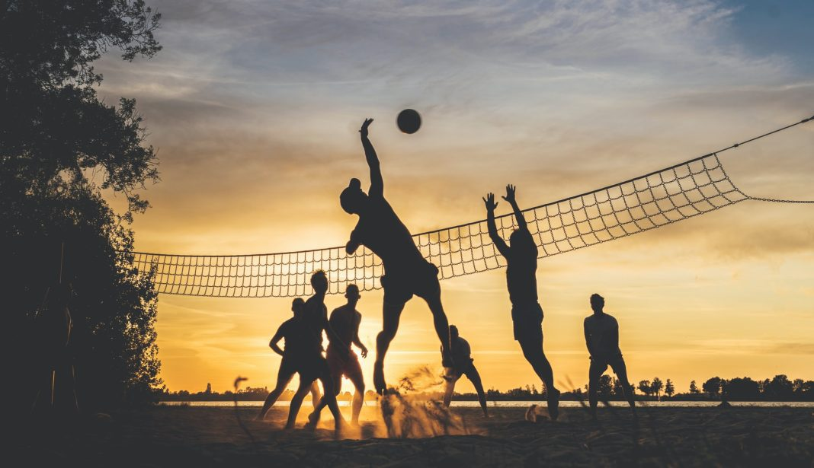

5 olahraga yang gak populer di Indonesia
CNN IndonesiaOct 31, 2023
Sebagai negara yang kaya akan jumlah penduduk, Indonesia sudah melahirkan sejumlah atlet yang menjadi juara di kompetisi-kompetisi level dunia. Sebagai contoh, baru-baru ini, Tontowi Ahmad dan Liliyana Natsir berhasil meraih medali emas untuk cabang bulutangkis di Olimpiade Rio 2016. Alhasil, nama Indonesia pun semakin mendongkrak di mata dunia olahraga.
Selain bulutangkis yang telah mendarah daging di keseharian masyarakat Indonesia, olahraga mainstream lain, seperti sepakbola, bola basket, dan bola voli juga sering dimainkan di gedung olahraga maupun halaman rumah. Walaupun demikian, masih ada banyak cabang olahraga yang sangat jarang disentuh oleh Indonesia tapi sudah populer di negara lain, lho. Inilah 5 jenis olahraga tersebut.
1. Rugby
Rugby adalah olahraga yang sangat terkenal di Inggris dan pertama kali diperkenalkan di abad ke 19. Asal mula terbentuknya olahraga ini juga sangat lucu, dimana seorang mahasiswa asal Inggris bernama William Webb Ellis malah membawa bola dengan tangan ketika bermain sepakbola ke arah gawang lawan.
Sebuah tim Rugby terdiri dari 15 orang dan akan bermain selama 4 ronde, dengan masing-masing ronde berdurasi 15 menit. Pemain harus mencetak poin dengan menendang, membawa, atau melempar bola melewati garis gawang lawan.
Kalau berhasil dengan cara membawa, tim akan mencetak 5 poin. Sementara kalau bola melewati gawang dengan ditendang, tim akan mendapatkan 2 poin. Tendangan penalti dan lemparan bernilai 3 poin.
Setelah berhasil mencetak poin, tim masih bisa mendapatkan 2 poin tambahan kalau berhasil merebut bola dari tim lawan sebelum tim lawan bisa mencetak poin. Tim lawan harus mencoba merebut bola dengan cara menabrak, men-tackle, atau menjatuhkan si pemegang bola.
Olahraga ini dikenal sangat barbar karena aturannya, apalagi para pemain nggak menggunakan pelindung badan apapun lho selain mouth guard.
Karena kerasnya olahraga ini, dibutuhkan tingkat sportivitas yang tinggi. Para pemain sadar kalau tabrak menabrak merupakan aturan dari permainan ini.
Kebanyakan orang Indonesia masih sangat temperamen dan mungkin kalau sekali ditabrak bisa langsung bertengkar. Toh, main bulutangkis kena shuttlecock aja bisa marah.
2. American Football
Meski mirip, Rugby dan American Football adalah dua olahraga yang berbeda, lho. Pertama, berbeda dengan Rugby yang seakan bermain hampir “telanjang”, American Football justru sangat melengkapi pemain dengan berbagai pelindung tubuh. Pemain harus mengenakan helm, pelindung bahu, pelindung kaki, dan mouth guard.